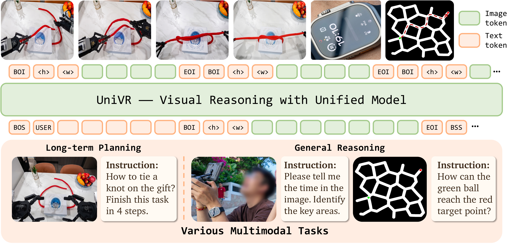
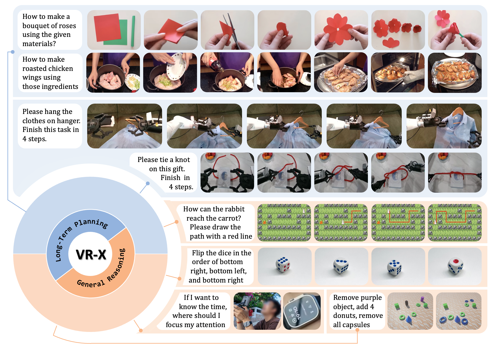

Background
Current AI models primarily derive world knowledge from text, performing reasoning and planning within the textual space. However, text is an abstract representation of the world, unable to fully encompass the rich information of the real visual world, such as complex dynamics, spatial relationships, and underlying physical laws. In contrast, vision serves as the most direct medium for world knowledge and remains the primary source for animals and humans to acquire information. Humans can perform complex reasoning without relying on language by directly simulating task execution and scene transitions in their minds—this constitutes our innate visual reasoning capability.
Recent approaches, such as MLLMs paired with generative models, conveniently leverage pre-existing linguistic strengths, but textual abstractions inherently struggle to capture intricate dynamics and spatial relationships. Their reasoning still remains heavily dependent on text guidance, requiring dense image-text pairs for both training and inference. These limitations drive our core inquiry: How can models utilize raw visual data to boost their visual reasoning capabilities across diverse tasks?
Architecture Overview

Given an image sequence and an instruction, UniVR models the next-frame distribution using image sequences containing demonstration trajectories across diverse scenarios. Our formulation does not require dense textual reasoning chains, but instead directly models the state transitions and underlying policy dynamics in these trajectories, encouraging the model to reason in visual space. We adopt Emu3.5 as our baseline, a state-of-the-art unified generative model that produces variable-length image sequences using a VQ-VAE-style autoencoder.
VR-GRPO: Visual Reasoning GRPO

While RL methods like GRPO offer a promising paradigm for performance enhancement, existing methods prioritize visual fidelity over reasoning correctness. We propose VR-GRPO, which integrates two complementary reward signals:
Global Reward (Rg): A VLM evaluator provides holistic assessment of generated sequences for task completion and visual quality.
Step-Focal Reward (Rs): We introduce a step-focal reward designed to identify the most error-prone steps in the reasoning trajectory. By extracting per-frame CLIP embeddings and calculating inter-trajectory variance, we locate the timestep of maximum uncertainty where the model's reasoning paths diverge, then focus the VLM on these critical steps for fine-grained evaluation.
The final reward combines both: Rreason = Rg − λ|Rg − Rs|, preventing the model from taking reasoning shortcuts while maintaining procedural integrity and physical coherence.
VR-X Benchmark

We introduce VR-X, the first large-scale benchmark designed for diverse and heterogeneous visual reasoning. VR-X is curated from 1.5M raw samples across 16 diverse sources (e.g., AgiBot, Action100M, EgoDex, VisualCoT), spanning minute-long planning (robotic manipulation, cooking, handcrafting) to single-step reasoning (mazes, visual search). After rigorous curation, the benchmark contains 310k cold-start training, 3k RL, and 1.8k evaluation samples, all in a unified format: query image, textual instruction, visual reasoning trajectory.